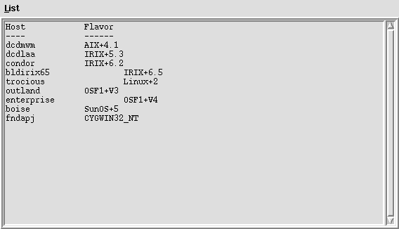

Using the buildmanager application build coordinator
Introduction
The buildmanager application build coordinator is a flexible, configurable, tool which lets you build software on multiple systems simultaneouosly, in an organized and consistent fashion. It allows you to set up standardized build sequences and actions which will be performed automatically, stop if/when things go wrong, and allows interaction with various build systems to correct problems. It is implemented in expectk, which combines the expect package for working with interactive programs with the Tk windowing toolkit and the Tcl scripting langauge. Any system you can telnet to and run commands on can be used as a build system with buildmanager.Starting buildmanager
At Fermilab, buildmanager is provided as a ups product, so before you can use it, you need to issue the command setup buildmanager to set the appropriate environment variables, etc. Since buildmanager uses the X Window system for displays, you need to be sitting at an X window terminal when you start it. Once these prerequisites are set, you can invoke buildmanager simply by saying buildmanager at your shell prompt.Initial screens
Two buildmanager windows should appear on your X Window display; a login window:
and an interaction window:

The login window has an entry area for your login and password on the build systems, and a button labeled Dismiss. If you were to press return in the password entry field, or the Dismiss button, buildmanager will proceed to log into systems marked as selected in the interaction window. For now, let's examine the interaction window first.
The interaction window initially has three sections. From top to bottom they are:
- menu-bar
- string entry area
- selected-systems checkbuttons
Logging in
After filling in a login and password in the login window, if you press the Dismiss button, (or the Return key in the password entry box), buildmanager will remove the login window and proceed to telnet to and log into each of the currently selected systems.A text area will appear for each system, with some status labels and
a window-sizing button to the left of each one.

In these text areas, you can watch buildmanager log into each system.
If your login or password is incorrect for some system, buildmanager will
re-prompt you for that system's login information with the login window.
Buildmanger will make a few passes over each login session, running a few startup commands and setting a few shell functions so that it can interact with the windows in a consistent fashion.
During the login procedure, most of the buttons and windows on the buildmanager screen will grey-out and become inactive, untill the login has completed.
Running Commands
You can run commands via several methods, this section will cover them.Adding and Removing systems
You can then add and delete listed build machines by clicking on their platform buttons in the main window, or clicking again to delete, and then pressing the [Update] button to have them actually logged in and/or logged out as needed. You can add or delete systems from the list of buttons by pulling down the Edit menu, choosing Host List, and editing the text list in the pop up window shown below:
You can also destroy a host's window by exiting from that login session when typing in the terminal window.